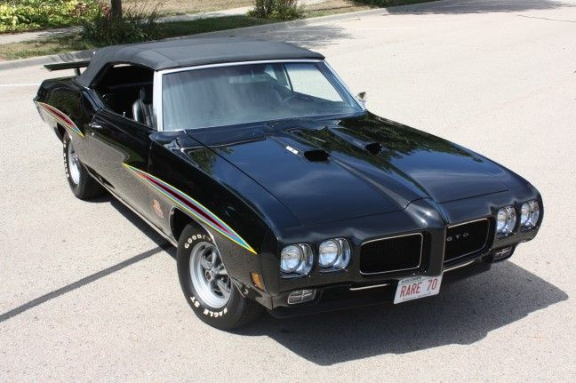
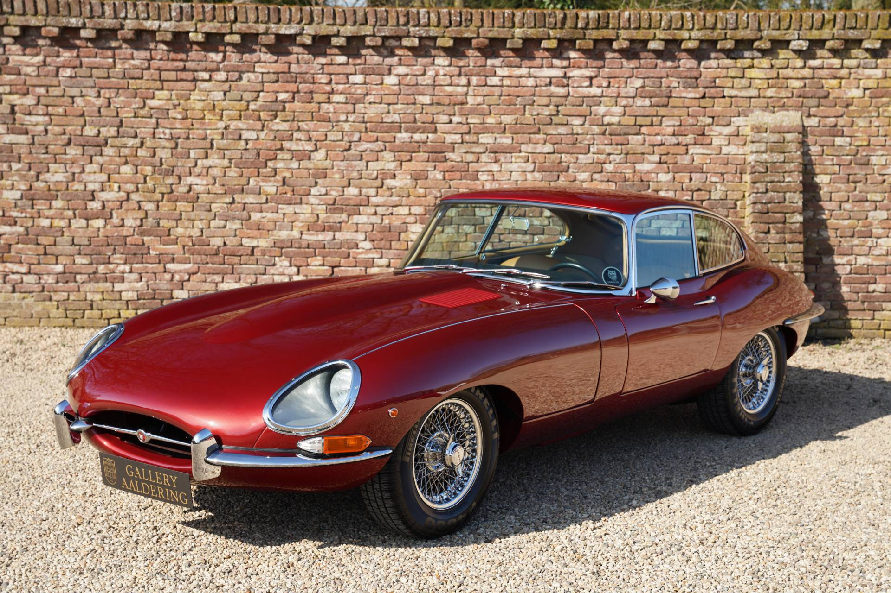
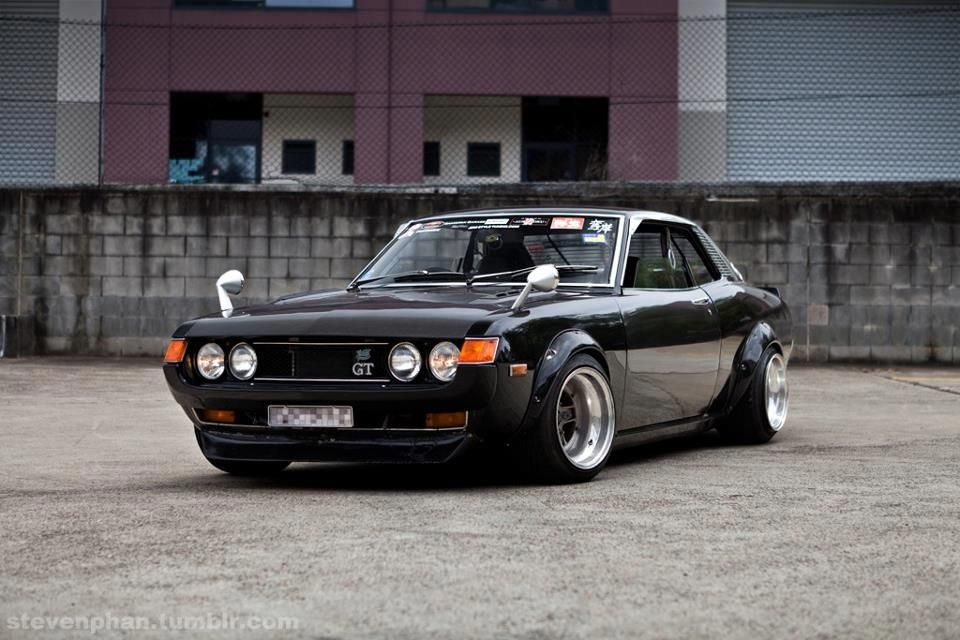

Clásicos Americanos

¡Adéntrate en el emocionante mundo
de los coches clásicos americanos!
Desde la potencia descomunal de los
muscle cars hasta la elegancia
atemporal de los descapotables de los
años dorados, los coches clásicos
americanos han cautivado los
corazones de los aficionados al motor
en todo el mundo.
Clásicos Europeos

Bienvenidos al apasionante mundo de
los coches clásicos europeos, donde
la elegancia se fusiona con la
ingeniería de precisión. Desde los
elegantes roadsters británicos hasta
los deportivos italianos de pura
sangre, los coches clásicos europeos
representan la cúspide del diseño
automotriz y la artesanía.
Clásicos Asiaticos

¡Explora el mundo intrigante de los
coches clásicos asiáticos! Desde los
icónicos sedanes japoneses hasta los
compactos ágiles y eficientes, los
coches clásicos asiáticos ofrecen una
fascinante mezcla de ingeniería
innovadora y diseño distintivo.